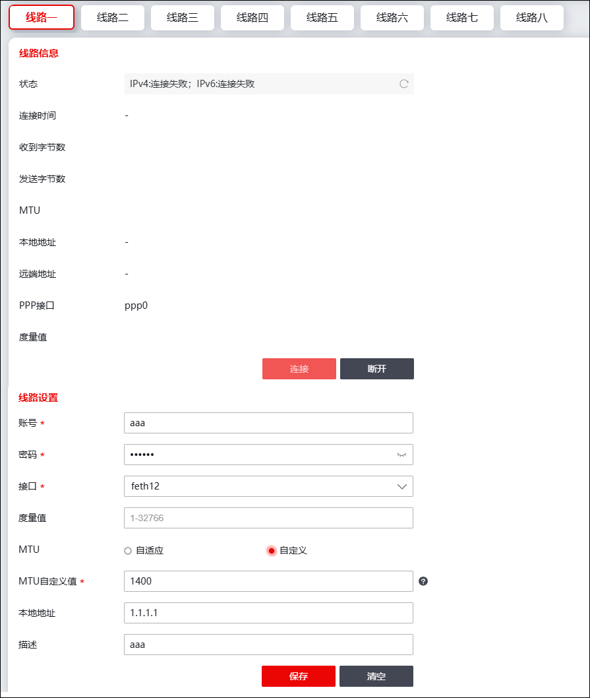

NGFW支持工作在路由模式的物理接口通过PPPoE拨号的方式自动获取IP地址，接入Internet。PPPOE界面有“线路一”到“线路八”八个界面，表示最多支持8条PPPoE线路，各线路配置方法相同，下面以线路一为例介绍如何通过PPPoE拨号方式获取接口IP地址。
| 步骤1 | 选择 ，配置对应物理接口的工作模式为“路由”，操作详见 物理接口。 |
| 步骤2 | 选择 ，激活“线路一”页签进入PPPoE拨号界面，如下图所示。 |

各项参数的具体说明如下表所示。
参数 |
说明 |
|
|---|---|---|
线路信息 |
显示PPPoE线路协商结果。 |
|
线路设置 |
账号 |
输入运营商提供的PPPoE拨号的用户名。 |
密码 |
输入运营商提供的PPPoE拨号的密码。 |
|
接口 |
在下拉框中选择进行PPPoE拨号的接口，必须选择路由模式的物理接口，且接口不能为GRE接口和bond接口。 说明：接口需要选择连接了运营商网线的接口。 |
|
度量值 |
设置自动添加的缺省路由的度量值。取值范围：1-32766；默认值：1。 |
|
MTU |
MTU,全称为Maximum Transmission Unit,即最大传输单元,它是数据链路层的概念,指以太网数据通信时,链路层上一次性允许通过或转发的数据帧的最大尺寸，单位：字节。可选项：自适应、自定义。 |
|
MTU自定义值 |
“MTU”参数选择“自定义”时，显示该参数。 取值范围：128-1492。 |
|
本地地址 |
输入运营商提供的IP地址，如果输入IP地址，NGFW的接口可通过静态IP接入Internet；如果未输入静态IP地址，NGFW的接口根据PPPoE服务器自动分配的IP地址接入Internet。 |
|
描述 |
输入简单的描述信息。 |
|
| 步骤3 | 参数设置完成后，点击【保存】按钮保存配置信息。 |
| 步骤4 | 点击【连接】可开启拨号，拨号成功后，“线路信息”会显示线路状态相关的详细信息。 |